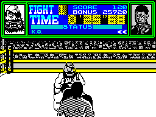
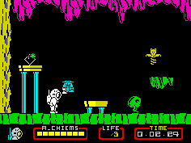
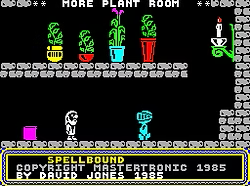

1985 - Crisis and Recovery
Taken from zxgoldenyears.org — written by R. Tayler
The unveiling of the Spectrum Plus the previous year came too late for most retailers, who had already stocked up on the original model. The 1984 Christmas period was a poor one for computer sales, so Sinclair kicked off the New Year by reducing the price of its new computer to £125 in an effort to claw back some lost ground.
This had a crippling effect on sales of the old Spectrum. Whereas before the rubber-keyed model at least held a price advantage over the Plus, it now had nothing in its favour. The ensuing sales stagnation, the modest success of the QL, and the cost of the C5 electric car project conspired to plunge Sinclair into a financial crisis.
By the summer, Sir Clive had tried and failed to persuade Robert Maxwell to bail out the company, so he put plan B into action: to sell £10m of new Spectrums to electrical retailer Dixons. The deal turned out to be a double-edged sword, however, thanks to a clause in the contract that forbade Sinclair from releasing a new computer in the UK for another six months. This thwarted plans to introduce the Spectrum 128k, already developed at the expense of Spanish distributor Investronica.
Copies, Tie-Ins and Triumphs
In the games market, the trend was toward more commercialisation and less imagination. Smaller companies continued to disappear, while the larger software houses consolidated their position with a slew of TV and movie tie-ins. The emphasis was shifting away from inventive experimentation towards formulaic mimicry. The amateurish spirit of the industry's early years was coming to an end.
Nevertheless, programming skills continued to advance and 1985 saw some of the most technically accomplished games yet. Ultimate's Underwurlde and Knight Lore, released at the end of 1984, did not reach most shops until the beginning of the New Year, and Ultimate cashed-in on the latter's success with a pair of aesthetically-similar titles: Alien 8 and Nightshade.
Other labels followed Ultimate’s lead with isometric 3D games of their own, demonstrating the growing trend towards self-copying. A glaring example of this habit was the beat 'em up genre. Towards the end of the year, Melbourne House launched Way of the Exploding Fist after an extensive advertising campaign. Within months it had been joined by Imagine’s Yie Ar Kung Fu, US Gold’s Bruce Lee and a gruelling succession of inferior titles, all trading off the back of WOTEF's success.
Kicking off a year of tie-ins was Activision's Ghostbusters. Although it was widely disparaged, it proved hugely successful and by the end of the year, Activision was claiming it as the best-selling game of all-time. This was never actually the case, but more than ever it proved that a title could generate enormous sales through brand association alone.

The Ocean tie-in factory churned out The Neverending Story, Roland's Rat Race, Frankie Goes to Hollywood, Rambo and V, which ranged from the truly wretched (Roland) to the strikingly original (Frankie). The Manchester-based label fared well with a pair of sports titles: Jon Ritman’s Matchday, which became the benchmark for Spectrum football games, and the acclaimed World Series Baseball, released under the newly-acquired Imagine label. Elite, the other leading tie-in specialist, produced some splendid sports games of its own, like Frank Bruno's Boxing and Grand National.
Improvements in graphics breathed new life into the shoot 'em up. Incentive's Moon Cresta was the best of the coin-op conversions, Firebird’s Buggy Blast and Highway Encounter by Costa Panayi of Android fame the most dazzling originals.
Games set beyond planet Earth never looked better. Pete Cook’s futuristic 3D shooter Tau Ceti was slick and playable, as was Starion from Melbourne House, which filled a gap before the inevitable arrival of BBC Micro favourite Elite late in the year. Although it made its name on Acorn’s flagship micro, it was the Spectrum that brought Elite to the masses and cemented its place as a gaming masterpiece.

Platform games still found a following, even if the genre was on the wane. Follow-ups Jet Set Willy 2, Chuckie Egg 2 and Monty on the Run maintained their predecessors’ high standards, although the bonkers Dynamite Dan and the toilsome Technician Ted were better still. More elaborate platformers that included exploration and problem-solving elements proved increasingly popular, such as the dazzling Nodes of Yesod by Odin, Bubble Bus's colourful Starquake, and Virgin’s Cauldron, a tricksy platform-shooter hybrid.
This evolution of action games into arcade adventures offered a richer experience to gamers tiring of simple jumping and collecting duties. Among the best of this ilk were Mikrogen's Wally Week series, Gargoyle's Dun Darach, Durell’s sneak-and-kick classic Saboteur, and isometric puzzler Fairlight.
Another of this genre was Gift from the Gods, released under the Ocean label. Programming team Denton Designs, which was comprised of ex-Imagine employees, used elements from Bandersnatch, one of the defunct company’s never-to-be-realised ‘mega games’, in its first title. Gift from the Gods impressed on quality but disappointed on price: an eye-watering £9.95.
Despite the appetite for faster and flashier visuals, mentally-stimulating games remained well served. Shadowfire, another Denton Designs creation, released this time by Beyond, was a polished hybrid of strategy and adventure that used an innovative icon-driven interface. Mikrogen’s Witch's Cauldron was a whimsical adventure with animated graphics that responded to text instructions. CCS released a pair of superb wargames by RT Smith in Arnhem and Desert Rats, while Mike Singleton's Doomdark's Revenge proved even better than its prequel, Lords of Midnight.
A pair of novel management games livened up one of the oldest home computer genres. Chris Sievey’s The Biz let you start your own band and guide it to the top of the charts, and Software Star by Football Manager creator Kevin Toms put you in charge of a computer games company.
Cheap and Cheerful
1985 was the year, too, in which the budget scene began producing a good number of titles worth buying. Cheap games had always appealed in principle, but generally disappointed in practice. At a time when most new releases cost upwards of £5, some companies thought they could make a killing by offering games for around the £2 mark - which rather underestimated the discerning tastes of young buyers, and the time and money needed to produce anything decent. The results were not memorable.

A corner was turned in 1984 with Firebird’s enjoyable platformer Booty, and budget titles went from strength to strength the following year, largely thanks to Mastertronic, who produced a string of accomplished and sometimes very good games for loose change prices. Pick of the bunch were Finders Keepers and Spellbound (part of the Magic Knight trilogy), robotic shepherding sim One Man And His Droid, and the engrossing RPG adventure Master of Magic.
Quicksilva and Bug Byte, who had underperformed of late, were bought up by Argus Press, while other old hands like Fantasy and Micromania went bust. The computer press was finding it difficult too, with Big K and Personal Computer Games going under. Your Spectrum chose to adapt rather than die, ending the year with a new name, Your Sinclair, and a more games-based approach.
All the tie-ins, spin-offs and rip-offs aside, 1985 was a great year for well-made software. The industry was more clinical and originality was harder come by, but Spectrum owners benefited from games of the highest quality.